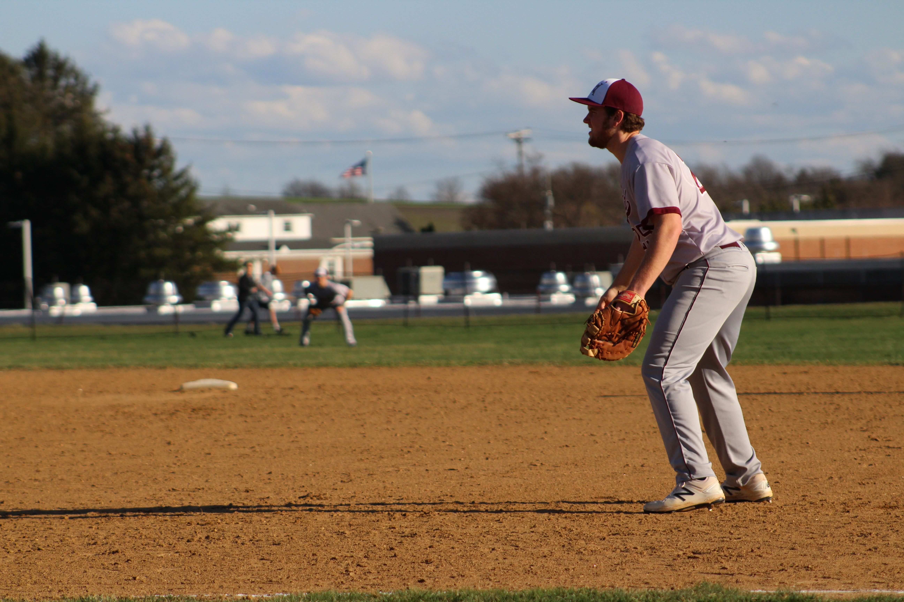

Purpose of Defense
야구계 격언 가운데 ‘타격은 팬을 즐겁게 하지만 수비는 감독을 기쁘게 한다’는 게 있다. 홈런, 안타 등은 팬을 열광시키지만 팀 승리에 보탬이 되는 것은 타격보다 수비라는 의미다. 감독이 수비를 좋아하든 말든 안타 제조기나 홈런왕, 탈삼진왕 등 화려한 수치에 대한 팬의 사랑과 관심은 끝이 없다. 반면, 수비는 아주 예술적인 플레이가 나오지 않는 한 헤어진 연인을 대하듯 냉담하다. 게다가 그 화려한 수비도 야구인의 눈에는 수준 높은 플레이가 아닐 때가 적지 않다. 반응이 빨랐다면 쉽게 잡을 타구도 몸을 날리며 유니폼을 더럽히는 파인 플레이로 둔갑한다.
수비 실력이 뛰어난 외야수로 손꼽히는 김창희(전 삼성)는 파인 플레이와는 거리가 멀었다. 외야로 타구가 날아가면 단지 떨어지는 지점에 있었다. 그가 다이빙 캐치와 같은 묘기를 부리며 공을 잡는 것을 보는 것은 로또에 당첨될 확률보다 낮았다. 늘 타구를 쉽게 잡는 것이 사실은 고도의 수비 기술이 있었기에 가능했다. 어느 연구 결과에 따르면 외야수는 종합적인 정보, 즉 귀로 배트에 공이 맞는 소리와 관중의 함성을 듣고 눈으로 하늘에 뜬 공의 위치와 내야 수비수의 동작 등을 보고 순간적으로 판단해서 뜬공을 잡는다고 한다. 정점에 뜬 공 화면만으로도 낙구 지점을 80% 이상 정확하게 판단한 실험 결과도 있다. 과학자들은 외야수의 포구 능력은 미사일 방어 체제가 따라갈 수 없을 정도로 완벽하다고 입을 모은다.